Rank-1 fastICA and flashier with Radmacher prior
junmingguan
2026-02-24
Last updated: 2026-03-08
Checks: 7 0
Knit directory: misc/
This reproducible R Markdown analysis was created with workflowr (version 1.7.1). The Checks tab describes the reproducibility checks that were applied when the results were created. The Past versions tab lists the development history.
Great! Since the R Markdown file has been committed to the Git repository, you know the exact version of the code that produced these results.
Great job! The global environment was empty. Objects defined in the global environment can affect the analysis in your R Markdown file in unknown ways. For reproduciblity it’s best to always run the code in an empty environment.
The command set.seed(20251108) was run prior to running
the code in the R Markdown file. Setting a seed ensures that any results
that rely on randomness, e.g. subsampling or permutations, are
reproducible.
Great job! Recording the operating system, R version, and package versions is critical for reproducibility.
Nice! There were no cached chunks for this analysis, so you can be confident that you successfully produced the results during this run.
Great job! Using relative paths to the files within your workflowr project makes it easier to run your code on other machines.
Great! You are using Git for version control. Tracking code development and connecting the code version to the results is critical for reproducibility.
The results in this page were generated with repository version 735cc7c. See the Past versions tab to see a history of the changes made to the R Markdown and HTML files.
Note that you need to be careful to ensure that all relevant files for
the analysis have been committed to Git prior to generating the results
(you can use wflow_publish or
wflow_git_commit). workflowr only checks the R Markdown
file, but you know if there are other scripts or data files that it
depends on. Below is the status of the Git repository when the results
were generated:
Ignored files:
Ignored: .DS_Store
Ignored: .Rhistory
Ignored: .Rproj.user/
Untracked files:
Untracked: analysis/ica_vs_flash_r1_rad copy.Rmd
Untracked: analysis/ica_vs_flash_r1_rad.Rmd
Untracked: analysis/ica_vs_flash_r1_update_2.Rmd
Untracked: analysis/preemble.tex
Unstaged changes:
Modified: analysis/ica_vs_flash_r1_update_1.Rmd
Modified: analysis/index.Rmd
Note that any generated files, e.g. HTML, png, CSS, etc., are not included in this status report because it is ok for generated content to have uncommitted changes.
These are the previous versions of the repository in which changes were
made to the R Markdown
(analysis/ica_vs_flashier_r1_rad.Rmd) and HTML
(docs/ica_vs_flashier_r1_rad.html) files. If you’ve
configured a remote Git repository (see ?wflow_git_remote),
click on the hyperlinks in the table below to view the files as they
were in that past version.
| File | Version | Author | Date | Message |
|---|---|---|---|---|
| Rmd | 735cc7c | junmingguan | 2026-03-08 | wflow_publish(c("analysis/ica_vs_flashier_r1_rad.Rmd")) |
| html | 94bb2cd | junmingguan | 2026-03-08 | Build site. |
| Rmd | c56d09c | junmingguan | 2026-03-08 | wflow_publish(c("analysis/ica_vs_flashier_r1_rad.Rmd")) |
| html | d868d80 | junmingguan | 2026-03-06 | Build site. |
| Rmd | 7d68aeb | junmingguan | 2026-03-06 | wflow_publish(c("analysis/ica_vs_flashier_r1_rad.Rmd")) |
library(flashier)
library(Matrix)
library(fastICA)
library(fastTopics)
library(ebnm)
source('code/ebcd_functions.R')
source('code/ebnm_rademacher.R')simulate_unbalanaced_rad_groups <- function(
K, n=100, p=1000, noise=1, percent_one=0.2) {
set.seed(1)
L = matrix(-1,nrow=n,ncol=K)
for(i in 1:K){L[sample(1:n,floor(percent_one*n)),i]=1}
FF = matrix(rnorm(p*K), nrow = p, ncol=K)
X = L %*% t(FF) + rnorm(n*p, 0, noise)
return(list(X=X, L=L, FF=FF))
}Summary
In this exploration, we attempt to
- understand why applying rank-1 fastICA to whitened \(\pm 1\) sources might fail to recover one of the true sources when they are unbalanced;
- examine whether rank-1 flashier with Rademacher prior on the loading (source) could solve the problem.
rank-1 fastICA seems to fail when the proportion of 1s (say, \(p\)) in the true \(\pm 1\) sources is close to 0.21 or 0.79. This is because in this case, whitening and centering forces these sources to have Gaussian-like fastICA objective values, and the algorithm tends to prefer other more non-Gaussian estimates, which might not be binary. Rank-1 flashier with Rademacher prior appears to do well in this case, but only when the true number of groups (\(K\)) is no more than 3. When \(K\) is large, even initializing from one of the true sources does not help.
Another finding is that when the \(K=3\) groups are unbalanced, in which case flashier with Rademacher prior can still find a true source if properly initialized, flashier solutions that perfectly recover a true source have low ELBO (although not too far away from the highest ELBO). But when \(K\) becomes larger, all flashier solutions (randomly initialized or initialized from the truth) are effectively the same. One conjecture is that the true sources usually correspond to local maxima of the ELBO; when \(K\) is relatively small, the local maxima are not too far away from the global maximum, so flashier can get stuck on one of the local ones. Specifically, when \(K=1\), the corresponding local maximum of the true source might actually be global. When \(K\) is large, the global maximum might be far above the local ones, so flashier is less likely to pick up the latter.
We have theoretically established equivalence between fastICA and flashier with Rademacher prior for centered and whitened data. If we drop the centering step, this seems to work well on unbalanced groups with a reasonably good initialization. With this approach, solutions with higher ELBO appears to have higher correlation with one of the truth. See here.
Problems to consider next:
Q: Is there any relationship between \(K\) and \(p\) in the unbalanced groups examples?
Q: How to decide the number of singular values to keep while whitening the data matrix?
Recap of rank-1 fastICA
To recap, given a data matrix \(Y \in \mathbb{R}^{n\times d}\), Rank-1 fastICA aims to find a direction of the dataset \(Y = \begin{bmatrix}\boldsymbol{y}_1 & \dots & \boldsymbol{y}_n\end{bmatrix}^\top\in \mathbb{R}^{n\times d}\), \(Y\boldsymbol{w}\), that is maximally non-Gaussian by optimizes the following objective:
\[ \max_{\boldsymbol{w}} \left(\mathbb{E} {G(\boldsymbol{w}^\top \boldsymbol{y})} - \mathbb{E} {G(Z)} \right)^2, \ \ s.t.\ \|\boldsymbol{w}\|=1. \]
We assume that \(Y\) has been column-centered, i.e., \(Y=CY\) where \(C=I_n-\frac{1}{n}\boldsymbol{11}^\top\), and whitened, i.e., \(Y^\top=KY^\top\) where \(K=D^{-1/2}U^\top\), eigen-decomposition of \(Y^\top Y/n\). The empirical objective is
\[ \max_{\boldsymbol{w}} \left(\frac{1}{n}\sum_{i=1}^n G(\boldsymbol{w}^\top \boldsymbol{y}_i) - \mathbb{E} {G(Z)} \right)^2=\max_{\boldsymbol{w}} \left( G(\boldsymbol{w}^\top Y)\boldsymbol{1} - \mathbb{E} {G(Z)} \right)^2, \ \ s.t.\ \|\boldsymbol{w}\|=1. \]
We consider the contrast function given by
\[ G(x)=\log \cosh{x} = \log \frac{e^x+e^{-x}}{2}. \]
with first derivative
\[ g(x)=G'(x)= \tanh{x}= \frac{e^x-e^{-x}}{e^x+e^{-x}} \]
and second derivative
\[ g'(x)=G''(x) = 1-\tanh^2{x}. \]
The maximum of the objective corresponds to some optima of \(\mathbb{E}{G(\boldsymbol{w^\top y})}\), and the KKT conditions give the fixed point equation:
\[ \mathbb{E}{\boldsymbol{y} g(\boldsymbol{w^\top y})} - \beta \boldsymbol{w} = 0. \]
The Jacobian matrix is then
\[ J(\boldsymbol{w}) = \mathbb{E}{\boldsymbol{yy^\top} g'(\boldsymbol{w^\top y})} - \beta I \approx \mathbb{E}{\boldsymbol{yy^\top}}\mathbb{E}{g'(\boldsymbol{w^\top y})} - \beta I = \mathbb{E}{g'(\boldsymbol{w^\top y})}I - \beta I. \] A newton update to solve the fixed point equation gives
\[ \boldsymbol{w}^+ = \boldsymbol{w} - (\mathbb{E}{\boldsymbol{y} g(\boldsymbol{w^\top y})} - \beta \boldsymbol{w}) / (\mathbb{E}{g'(\boldsymbol{w^\top y})} - \beta). \] Multiply both sides by the denominator gives the rank-1 fastICA algorithm:
\[ \begin{align}\boldsymbol{w}^+ &= \mathbb{E}{\boldsymbol{y} g(\boldsymbol{w^\top y})} - \mathbb{E}{g'(\boldsymbol{w^\top y})} \boldsymbol{w} \\ & \boldsymbol{w}=\boldsymbol{w}^+/\|\boldsymbol{w}^+\|\end{align} \]
The empirical version of the fixed point equation is
\[ \frac{1}{n}\sum_{i=1}^n \boldsymbol{y_i} g(\boldsymbol{w^\top y_i})=\frac{1}{n}Y^\top g(Y \boldsymbol{w}) = \frac{1}{n}Y^\top \tanh{Y \boldsymbol{w}} \propto \boldsymbol{w}. \]
This gives rise to the following update:
\[ \begin{align*} \boldsymbol{v} &\leftarrow \tanh(Yw) \\ \boldsymbol{w} & \leftarrow Y^\top \boldsymbol{v}/ \|Y^\top \boldsymbol{v}\|_2, \end{align*} \]
or more succinctly,
\[ \begin{align*} \boldsymbol{v} \leftarrow \tanh(S \boldsymbol{v / \sqrt{\boldsymbol{v}^\top S \boldsymbol{v}}}), \end{align*} \]
where \(S = Y Y^\top\).
fastica_r1update_1iter = function(X,w){
w= w/sqrt(sum(w^2))
P = t(X) %*% w
G = tanh(P)
G2 = 1-tanh(P)^2
w = X %*% G - sum(G2) * w
w = w/sqrt(sum(w^2))
return(w)
}
fastica_r1update = function(init_w, X1, n_iter = 100) {
w = init_w
for(i in 1:n_iter)
{
w = fastica_r1update_1iter(X1,w)
}
return(w)
}
preprocess = function(X, n.comp=10){
n <- nrow(X)
p <- ncol(X)
X <- scale(X, scale = FALSE)
X <- t(X)
## This appears to be equivalant to X1 = t(svd(X)$v[,1:n.comp])
V <- X %*% t(X)/n
s <- La.svd(V)
D <- diag(c(1/sqrt(s$d)))
K <- D %*% t(s$u)
K <- matrix(K[1:n.comp, ], n.comp, p)
X1 <- K %*% X
return(X1)
}
preprocess2 = function(X, n.comp=10, center = FALSE){
n <- nrow(X)
p <- ncol(X)
if (center) X <- scale(X, scale = FALSE)
# X <- t(X)
svd.X <- svd(X)
X1 <- svd.X$u[,1:n.comp] %*% diag(rep(1, n.comp)) %*% t(svd.X$v[,1:n.comp])
return(X1)
}
compute_objective = function(X,w){
P = t(X) %*% w
return(mean(log(cosh(P))))
}
compute_objective_s = function(s){
return(mean(log(cosh(s))))
}Failure of rank-1 fastICA on unbalanced groups
First we note that by a Taylor’s expansion:
\[ \mathbb{E}[\log(\cosh(X))] \approx \frac{1}{2}\mathbb{E}[X^2] - \frac{1}{12}\mathbb{E}[X^4] = \frac{1}{2} - \frac{1}{12}\mathbb{E}[x^4]=\frac{1}{4}-\frac{1}{12}\kappa, \quad \kappa=\mathbb{E}{x^4}-3 \]
for a random variable \(X\) with unit second moment, where \(\kappa\) represents the kurtosis. So roughly, if we were to find a source that such that the objective is large, we would obtain something that has low kurtosis, and vise versa.
To understand why rank-1 fastICA might have trouble uncovering unbalanced \(\pm 1\) sources, note that the mean and variance of a \(\{-1, 1\}\) RV \(X\) with \(P(X=1)=p\) is
\[ \mu = 2p-1\;\; \sigma^2=1-\mu^2 = 4p(1-p). \]
Mean centering and pre-whitening yield
\[ \hat{X}:=\frac{X-\mu}{\sigma}= \begin{cases} \sqrt{\frac{1-p}{p}} & w/ \ prob=p \\ -\sqrt{\frac{p}{1-p}} & w/ \ prob=1-p. \end{cases} \] The fourth moment is
\[ \frac{1}{p(1-p)}-3, \]
and kurtosis is
\[ \kappa = \frac{1}{p(1-p)} -6. \]
We can solve
\[ p^2-p+1/6=0, \]
to get \(p=0.79\text{ or } 0.21\).
f <- function(p) {1/p/(1-p)-6}
rootSolve::uniroot.all(f, interval = c(0.1, 0.9))[1] 0.2113505 0.7886495When \(p\) is near the two thresholds, the pre-whitened source \(\hat{X}\) has \(\kappa \approx 0\). That is, in terms of the objective, such source is not too different from a standard Gaussian, so it is not favored by the algorithm. Instead, the algorithm could find a source that is more symmetric, hence has higher objective, or lower kurtosis. One such example is the uniform distribution \(\text{unif}[-\sqrt{3}, \sqrt{3}]\), which has higher objective than \(\hat{X}\) and a standard Gaussian.
Whwn \(p\) is far away from the two thresholds, the algorithm would happily pick up the pre-whiten binary source, as it’s far from Gaussian. Within \((0.21, 0.79)\), the \(\pm 1\) source has negative kurtosis \(\kappa\) and hence is sub-Gaussian, and vise versa.
p = 0.21
y2 = -sqrt(p/(1-p))
y1 = sqrt((1-p)/p)
p* logb(cosh(y1)) + (1-p)* logb(cosh(y2))[1] 0.3666969mean(log(cosh( rnorm(100000) )))[1] 0.3759524integrand <- function(x) {
log(cosh(x)) * (1 / (2 * sqrt(3)))
}
integrate(integrand, lower = -sqrt(3), upper = sqrt(3))0.4013379 with absolute error < 1e-08To demonstrate the phenomenon again, we consider the simple case where \(X\) is rank 1 plus noise and the true sources \(\boldsymbol{\ell}\) is asymmetric Rademacher with 20% 1’s. Rank-1 fastICA cannot uncover the true source (in the sense that the estimated source has low correlation with the true source) even though it is initialized from the ground truth. Indeed, in this case, it picks up a uniform distribution.
sim_data <- simulate_unbalanaced_rad_groups(K=1, percent_one = 0.2)
X <- sim_data$X
L <- sim_data$L
X1 = preprocess(X)
w <- fastica_r1update(init_w = X1 %*% L[,1], X1 = X1)
cor(L, t(X1) %*% w) [,1]
[1,] 0.06702229plot(t(X1) %*% w)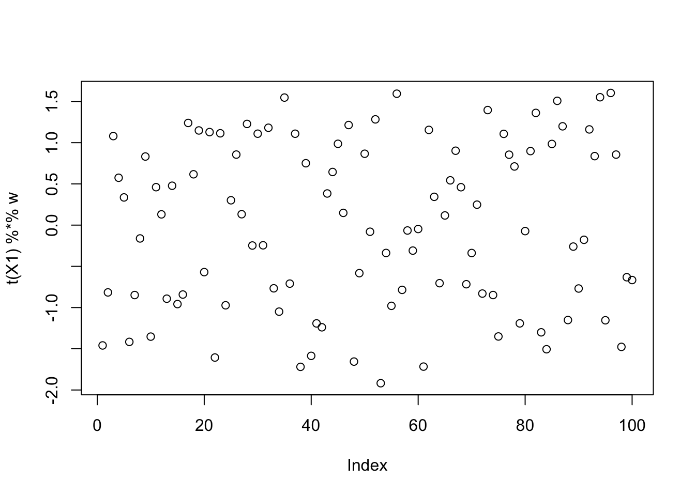
compute_objective(X1, w)[1] 0.4053189If instead we have 10% 1s, the objective is not close to that of a Gaussian, so the algorithm can pick up this source, and similarly for 30% 1s.
sim_data <- simulate_unbalanaced_rad_groups(K=1, percent_one = 0.1)
X <- sim_data$X
L <- sim_data$L
X1 = preprocess(X)
w <- fastica_r1update(init_w = X1 %*% L[,1], X1 = X1)
cor(L, t(X1) %*% w) [,1]
[1,] 0.998208plot(t(X1) %*% w)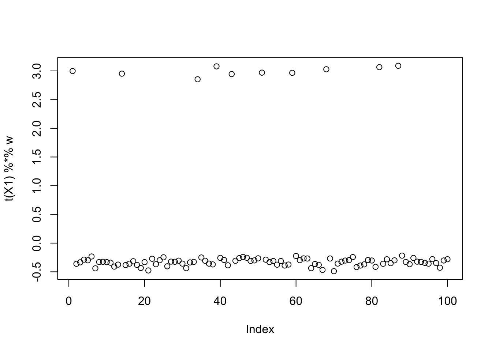
compute_objective(X1, w)[1] 0.2807113sim_data <- simulate_unbalanaced_rad_groups(K=1, percent_one = 0.3)
X <- sim_data$X
L <- sim_data$L
X1 = preprocess(X)
w <- fastica_r1update(init_w = X1 %*% L[,1], X1 = X1)
cor(L, t(X1) %*% w) [,1]
[1,] 0.9994419plot(t(X1) %*% w)
compute_objective(X1, w)[1] 0.4044505flashier with Rademacher prior
It has previously been shown that adding an intercept solves the problem introduced by mean-centering and whitening. Here, we consider a different route—apply flashier with a Rademacher prior, which has been shown to be equivalent to fastICA if the data matrix is prewhitened and the prior probability is fixed to be 0.5.
Some derivations
For the sake of completeness, we first work out the posterior under such prior.
Symmetric Rademacher
Consider
\[ U \in \{-a, +a\}, \qquad P(U=a)=P(U=-a)=\tfrac12, \]
and assume the observation \(X\) is normally distributed around the true mean \(u\) with known variance \(\sigma^2\)
\[ X \mid U=u \sim N(u,\sigma^2). \]
The likelihoods for each possible state of \(u\) are
\[ f(x\mid U=a) = \frac{1}{\sqrt{2\pi\sigma^2}} \exp\left(-\frac{(x-a)^2}{2\sigma^2}\right), \]
and
\[ f(x\mid U=-a) = \frac{1}{\sqrt{2\pi\sigma^2}} \exp\!\left(-\frac{(x+a)^2}{2\sigma^2}\right). \]
Using Bayes’ rule:
\[ P(U=a\mid X=x) = \frac{f(x\mid U=a)\cdot \tfrac12} {f(x\mid U=a)\cdot \frac{1}{2} + f(x\mid U=-a)\cdot \frac{1}{2}}. \]
Some algebra gives:
\[ P(U=a\mid x) = \frac{1}{1 + \exp\!\left(-\frac{4ax}{2\sigma^2}\right)} = \frac{1}{1 + \exp\!\left(-\frac{2ax}{\sigma^2}\right)}. \]
\[ P(U=-a\mid x) = 1 - P(U=a\mid x) = \frac{1}{1 + \exp\!\left(\frac{2ax}{\sigma^2}\right)}, \]
\[ u\mid x \sim \text{Rademacher}(-a,+a;p(x)), \qquad p(x) = \frac{1}{1 + e^{-2ax/\sigma^2}}. \] Posterior mean is given by
\[ \begin{align*} \mathbb{E}[U\mid x] &= a(2P(U=a \mid X=x) -1) \\ &= a \frac{2}{1+e^{-2ax/\sigma^2}}-a \frac{1+e^{-2ax/\sigma^2}}{1+e^{-2ax/\sigma^2}} \\ &=a \frac{1-e^{-2ax/\sigma^2}}{1+e^{-2ax/\sigma^2}} \\ &= a \frac{e^{ax/\sigma^2}-e^{-ax/\sigma^2}}{e^{ax/\sigma^2}+e^{-ax/\sigma^2}}\\ &=a\,\tanh\!\left(\frac{ax}{\sigma^2}\right). \end{align*} \]
Asymmetric Rademacher
Now consider
\[ U \in \{-a, +a\}, \qquad P(U=a)=w, \quad P(U=-a)=1-w \]
Assume the observation \(X\) is normally distributed around the true mean \(u\) with known variance \(\sigma^2\):
\[ X \mid U=u \sim \mathcal{N}(u,\sigma^2). \]
The likelihood for each possible state of \(U\) is:
\[ \begin{align*} f(x\mid U=a) &= \frac{1}{\sqrt{2\pi\sigma^2}} \exp\left(-\frac{(x-a)^2}{2\sigma^2}\right) \\ f(x\mid U=-a) &= \frac{1}{\sqrt{2\pi\sigma^2}} \exp\left(-\frac{(x+a)^2}{2\sigma^2}\right). \end{align*} \]
Using Bayes’ rule, the posterior probability of \(U=a\) is:
\[ P(U=a\mid X=x) = \frac{f(x\mid U=a)\cdot w}{f(x\mid U=a)\cdot w + f(x\mid U=-a)\cdot (1-w)} \]
Some algebra gives
\[ P(U=a\mid X=x) = \frac{1}{1 + \frac{1-w}{w} \exp\left(-\frac{2ax}{\sigma^2}\right)}. \]
The probability of the alternative state is \(1 - P(U=a \mid X=x)\):
\[ P(U=-a\mid x) = \frac{1}{1 + \frac{w}{1-w} \exp\left(\frac{2ax}{\sigma^2}\right)} \]
We can express this more compactly:
\[ P(U=a \mid X=x) = \frac{1}{1 + \exp\left(-\frac{2ax}{\sigma^2} - \ln\frac{w}{1-w}\right)}. \]
The posterior mean is given by:
\[ \mathbb{E}[U\mid X=x] = a(2P(U=a \mid X=x) -1)=a\tanh\left(\frac{ax}{\sigma^2} + \frac{1}{2}\ln\left(\frac{w}{1-w}\right)\right). \]
We only need to implement an ebnm function for \(a=1\), since the scale could be captured by
the factors.
We implemented two versions:
ebnm_symm_rademacher: the prior probability \(w\) is fixed to be 0.5, hence the prior is symmetric. We call flashier with such prior flashierSymmRad for short in later section.ebnm_rademacher: the prior probability \(w\) is estimated from the data, hence the prior could be asymmetric. We call flashier with such prior flashierRad for short in later section.
Unbalanced groups example
We first goes back to the unbalanced 1 group example with 20 out of 100 members (20% 1s). We first consider the flashierSymmRad. Initialized from the truth, the solution stays there and does not move. Initialized randomly from Gaussian, the algorithm still perfectly recover the true source. flashierRad also has the same performance, and the prior probability is estimated almost perfectly to be 0.2.
Note that in both cases, the estimated sources are exactly \(\pm 1\), this is probably because the “observed” \(\hat{\boldsymbol{\ell}}\) (i.e., \(Y \boldsymbol{f}\) where \(\boldsymbol{f}\) is the true factor) displays two clear “\(\pm 1\)” clusters, dragging the posterior probability to either side. However, this also means that \(\log \cosh\) of the estimated source will always be fixed due to its symmetry. This would not hold if the signal-to-noise ratio is too small. For example:
sim_data <- simulate_unbalanaced_rad_groups(K=1, noise=30, percent_one = 0.5)
X <- sim_data$X
FF <- sim_data$FF
plot(X %*% FF)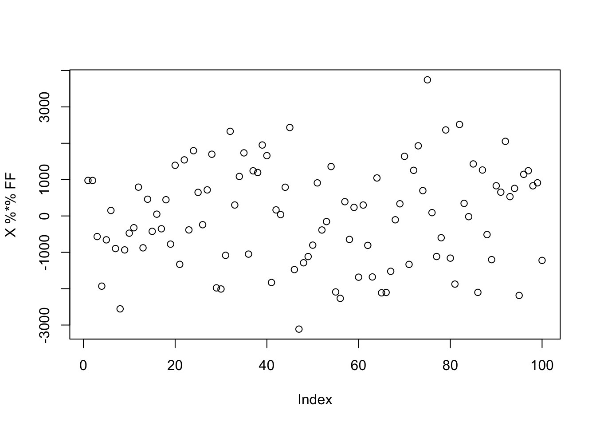
Unbalanced 1 group
sim_data <- simulate_unbalanaced_rad_groups(K=1, percent_one = 0.2)
X <- sim_data$X
L <- sim_data$L# symmetric Rad: init from truth
l <- matrix(L[,1], ncol = 1)
f <- t(solve(crossprod(l), crossprod(l, X)))
flash_res_init_from_true_L <- flash_init(X) |>
flash_factors_init(init = list(l, f),
ebnm_fn = c(ebnm_symm_rademacher, ebnm_normal)) |>
flash_backfit(verbose = 0)
# correlation with the true source
cor(L, flash_res_init_from_true_L$L_pm) [,1]
[1,] 1# correlation with the initialization
cor(l, flash_res_init_from_true_L$L_pm) [,1]
[1,] 1flash_res_init_from_true_L$elbo[1] -144615.9# symmetric Rad: init from Gaussian
n <- nrow(X)
l <- matrix(rnorm(n), ncol = 1)
f <- t(solve(crossprod(l), crossprod(l, X)))
flash_res_init_from_random_K1 <- flash_init(X) |>
flash_factors_init(init = list(l, f),
ebnm_fn = c(ebnm_symm_rademacher, ebnm_normal)) |>
flash_backfit(verbose = 0)
# correlation between estimated source and true L
cor(L, flash_res_init_from_random_K1$L_pm) [,1]
[1,] -1# correlation between estimated source and init L
cor(l, flash_res_init_from_random_K1$L_pm) [,1]
[1,] 0.2572059flash_res_init_from_random_K1$elbo[1] -144615.9# Asymmetric Rad: init from Gaussian
l <- matrix(rnorm(nrow(X)), ncol = 1)
f <- t(solve(crossprod(l), crossprod(l, X)))
flash_res_init_from_random_K1 <- flash_init(X) |>
flash_factors_init(init = list(l, f),
ebnm_fn = c(ebnm_rademacher, ebnm_normal)) |>
flash_backfit(verbose = 0)
# correlation between estimated source and true L
cor(L, flash_res_init_from_random_K1$L_pm) [,1]
[1,] -1# correlation between estimated source and init L
cor(l, flash_res_init_from_random_K1$L_pm) [,1]
[1,] 0.01309708flash_res_init_from_random_K1$elbo[1] -144596.6flash_res_init_from_random_K1$L_ghat[[1]]
w a
1 0.7999988 1flash_res_init_from_random_K1$residuals_sd[1] 1.003157Unbalanced 3 groups
The unbalanced 2 groups case is similar: both flashierSymmRad and flashierRad always find a true source. But for unbalanced 3 groups, it is not guaranteed that they will find one of the true sources if not initialized from them (if initialized from one of the true sources, they will stay there).
In what follows, we computed 100 estimated sources from 100 random initializations. (with different seeds). More than half of them are perfect recovery of one of the true sources. We also examined the ELBOs and correlations with the true sources. The ELBOs are highly (negatively) correlated with the estimated source’s correlation with the true sources. Higher ELBO corresponds to lower correlation with one true source, specifically, solutions that perfectly recovered the source have the lowest ELBO. This suggests that the true sources correspond to some local maxima of the ELBO, and it is typically not the glocal maximum. flashier with Rademacher prior is still fundamentally different from fastICA, in that the former cares more about the fit.
The estimated source is still \(\pm 1\) for all considered 100 random initializations, so looking at \(\log \cosh\) is meaningless.
sim_data <- simulate_unbalanaced_rad_groups(K=3, percent_one = 0.2)
X <- sim_data$X
L <- sim_data$L
FF <- sim_data$FF# symmetric Rad: init from truth
l <- matrix(L[,1], ncol = 1)
f <- t(solve(crossprod(l), crossprod(l, X)))
flash_res_init_from_true_L <- flash_init(X) |>
flash_factors_init(init = list(l, f),
ebnm_fn = c(ebnm_rademacher, ebnm_normal)) |>
flash_backfit(verbose = 0)
cor(L, flash_res_init_from_true_L$L_pm) [,1]
[1,] 1.000000e+00
[2,] 5.724587e-17
[3,] -6.250000e-02cor(l, flash_res_init_from_true_L$L_pm) [,1]
[1,] 1flash_res_init_from_true_L$elbo[1] -197669.8Symm Rad
obj <- c() # fastICA objective of the solutions, should be the same for all solution
elbo_list <- c() # final elbo of each solution
cor_max <- c() # maximum correlation between the estmate and a true source
mse <- c()
est_L <- matrix(0, nrow = nrow(X), ncol = 100) # all 100 solutions
for (i in 1:100) {
set.seed(i)
l <- matrix(rnorm(n), ncol = 1)
f <- t(solve(crossprod(l), crossprod(l, X)))
flash_res_init_from_random_K1 <- flash_init(X) |>
flash_factors_init(init = list(l, f),
ebnm_fn = c(ebnm_symm_rademacher, ebnm_normal)) |>
flash_backfit(verbose = 0)
cor_tmp <- cor(L, flash_res_init_from_random_K1$L_pm)
cor_max <- c(cor_max, cor_tmp[which.max(abs(cor_tmp)), ])
obj <- c(obj, compute_objective_s(flash_res_init_from_random_K1$L_pm))
elbo_list <- c(elbo_list, flash_res_init_from_random_K1$elbo)
mse <- c(mse, mean((flash_res_init_from_random_K1$L_pm %*% t(flash_res_init_from_random_K1$F_pm) - L %*% t(FF))^2))
est_L[,i] <- flash_res_init_from_random_K1$L_pm
# flash_res_init_from_random_K1$L_ghat[[1]][1,1]
}
table(obj)obj
0.433780830483027
100 table(cor_max)cor_max
-1 -0.454256762579497 0.454256762579497 1
27 22 20 31 plot(elbo_list)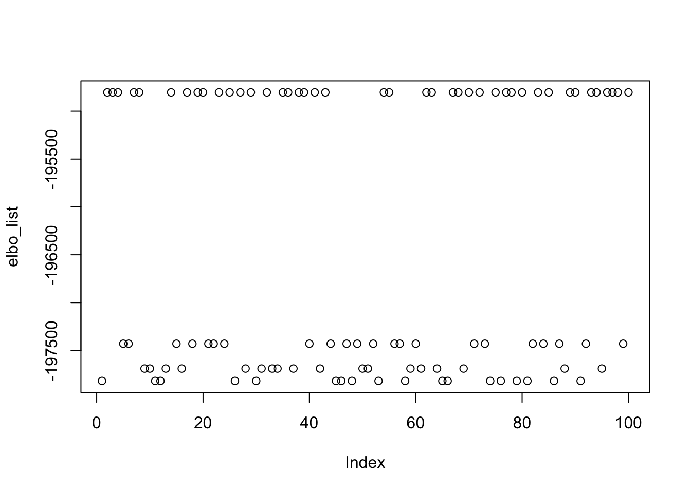
min(elbo_list)[1] -197818.1abs_cor_max <- abs(cor_max)
cor(cbind(mse, elbo_list, abs_cor_max)) mse elbo_list abs_cor_max
mse 1.0000000 -0.9991268 0.9913309
elbo_list -0.9991268 1.0000000 -0.9959549
abs_cor_max 0.9913309 -0.9959549 1.0000000plot(elbo_list, cor_max)
image(t(est_L))
image(t(est_L[, order(elbo_list)]))
Asymm Rad
obj <- c() # fastICA objective of the solutions, should be the same for all solution
elbo_list <- c() # final elbo of each solution
cor_max <- c() # maximum correlation between the estmate and a true source
mse <- c()
est_L <- matrix(0, nrow = nrow(X), ncol = 100) # all 100 solutions
for (i in 1:100) {
set.seed(i)
l <- matrix(rnorm(n), ncol = 1)
f <- t(solve(crossprod(l), crossprod(l, X)))
flash_res_init_from_random_K1 <- flash_init(X) |>
flash_factors_init(init = list(l, f),
ebnm_fn = c(ebnm_rademacher, ebnm_normal)) |>
flash_backfit(verbose = 0)
cor_tmp <- cor(L, flash_res_init_from_random_K1$L_pm)
cor_max <- c(cor_max, cor_tmp[which.max(abs(cor_tmp)), ])
obj <- c(obj, compute_objective_s(flash_res_init_from_random_K1$L_pm))
elbo_list <- c(elbo_list, flash_res_init_from_random_K1$elbo)
mse <- c(mse, mean((flash_res_init_from_random_K1$L_pm %*% t(flash_res_init_from_random_K1$F_pm) - L %*% t(FF))^2))
est_L[,i] <- flash_res_init_from_random_K1$L_pm
# flash_res_init_from_random_K1$L_ghat[[1]][1,1]
}
table(obj)obj
0.433780830483027
100 table(cor_max)cor_max
-1 -0.454256762579497 0.454256762579497 1
27 22 21 30 plot(elbo_list)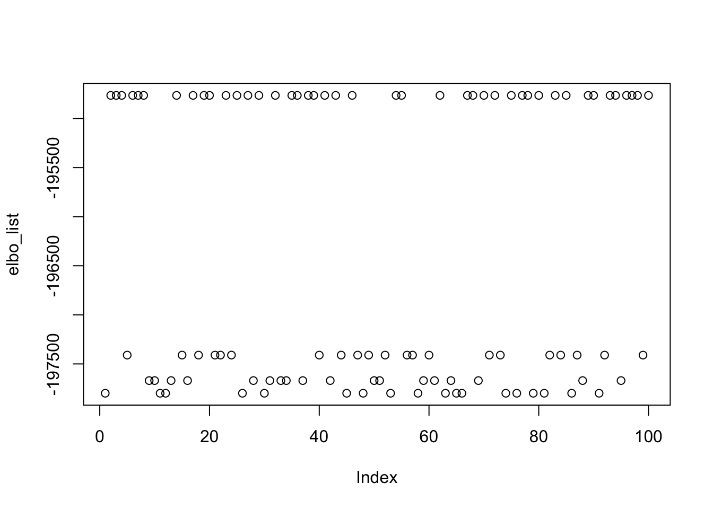
min(elbo_list)[1] -197798.9abs_cor_max <- abs(cor_max)
cor(cbind(mse, elbo_list, abs_cor_max)) mse elbo_list abs_cor_max
mse 1.0000000 -0.9991338 0.9916345
elbo_list -0.9991338 1.0000000 -0.9961468
abs_cor_max 0.9916345 -0.9961468 1.0000000plot(elbo_list, cor_max)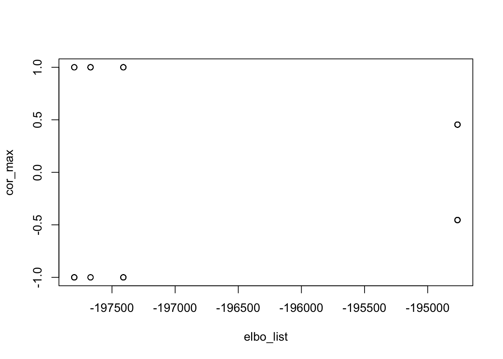
image(t(est_L))
image(t(est_L[, order(elbo_list)]))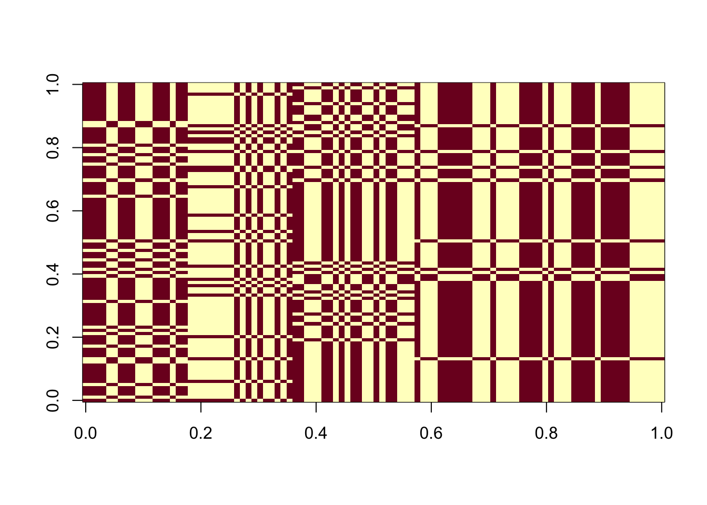
Many unbalanced groups
As \(K\) increases, both flashierRad and flashierSymmRad start to struggle. As we will see here (we only show flashierRad since the other is similar), once \(K\) goes past 3, even if we initialize the algorithm from the truth, it moves away from it, and the correlation between the estimated source and the true sources decreases.
cor_max <- c() # max correlation with one of the true sources
cor_init <- c() # correlation with initialization
for (K in 1:9) {
sim_data <- simulate_unbalanaced_rad_groups(K=K, percent_one = 0.2)
X <- sim_data$X
L <- sim_data$L
FF <- sim_data$FF
l <- matrix(L[,1], ncol = 1)
f <- t(solve(crossprod(l), crossprod(l, X)))
res_trueL <- flash_init(X) |>
flash_factors_init(init = list(l, f),
ebnm_fn = c(ebnm_rademacher, ebnm_normal)) |>
flash_backfit(verbose = 0)
cor_max <- c(cor_max, max(abs(cor(L, res_trueL$L_pm))))
cor_init <- c(cor_init, cor(l, res_trueL$L_pm)[1])
}
cor_max[1] 1.0000000 1.0000000 1.0000000 0.6289709 0.4000222 0.4054654 0.2857143
[8] 0.2806707 0.2010076cor_init[1] 1.00000000 1.00000000 1.00000000 0.62897090 0.18948418 0.03686049 0.10714286
[8] 0.15309311 0.20100756Unbalanced 9 groups
We look closely at the unbalanced 9 groups example, with 20 members in each. All 100 random initializations result in the same solution, and it is far away from the truth.
sim_data <- simulate_unbalanaced_rad_groups(K=9, percent_one = 0.2)
X <- sim_data$X
L <- sim_data$L
FF <- sim_data$FF
plot(X %*% FF)
obj <- c()
elbo_list <- c()
cor_max <- c()
mse <- c()
est_L <- matrix(0, nrow = n, ncol = 100)
for (i in 1:100) {
set.seed(i)
l <- matrix(rnorm(nrow(X)), ncol = 1)
f <- t(solve(crossprod(l), crossprod(l, X)))
flash_res_init_from_random_K1 <- flash_init(X) |>
flash_factors_init(init = list(l, f),
ebnm_fn = c(ebnm_rademacher, ebnm_normal)) |>
flash_backfit(verbose = 0)
cor_tmp <- cor(L, flash_res_init_from_random_K1$L_pm)
cor_max <- c(cor_max, cor_tmp[which.max(abs(cor_tmp)), ])
obj <- c(obj, compute_objective_s(flash_res_init_from_random_K1$L_pm))
elbo_list <- c(elbo_list, flash_res_init_from_random_K1$elbo)
mse <- c(mse, mean((flash_res_init_from_random_K1$L_pm %*% t(flash_res_init_from_random_K1$F_pm) - L %*% t(FF))^2))
est_L[,i] <- flash_res_init_from_random_K1$L_pm
# flash_res_init_from_random_K1$L_ghat[[1]][1,1]
}
plot(cor_max)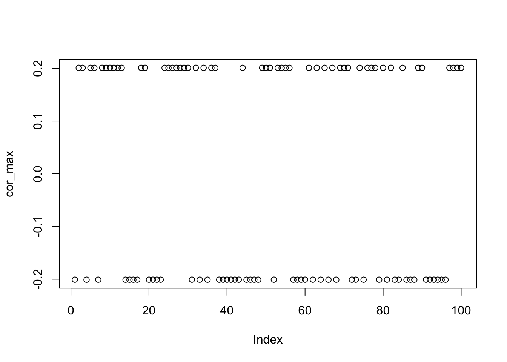
image(t(est_L))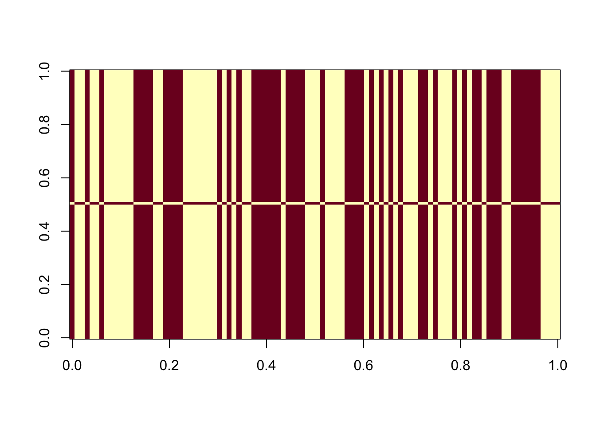
Whitening + flashier
We have previously shown that applying centering and whitening + flashier with Rademacher prior is equivalent to fastICA. Here we want to examine the performance the former procedure in a \(K=5\) unbalanced groups example (with \(p=0.2\)).
Formally, we apply the following transformation to the data matrix before applying flashier:
\[ \begin{align} \widehat{Y} &=\left(I_n-\frac{1}{n}\boldsymbol{11}^\top\right) Y \\ \widehat{Y}_C &= U_C V_C^\top, \end{align} \] where \(U_K\) and \(V_K\) consist of the top \(C\) left and right singular vectors of the column-centered data matrix \(\widehat{Y}\). However, it seems that when \(p\) is near the thresholds, e.g., \(p=0.2\), centering makes thing worse if the algorithm is not initialized from one of the true sources. As before, we initialized flashier from 100 random vectors with 100 different seeds. If we look closely at the estimated sources, we can see that they are approximately balanced, i.e., the number of ones and the number of negative ones are approximately 1:1. A good news is that ELBO seems to be positively correlated with \(\hat{\ell}-\ell\) correlation, so whitening seems to have de-emphasized the fit term in the ELBO objective.
sim_data <- simulate_unbalanaced_rad_groups(
K=5, n=100, p=1000, percent_one = 0.2
)
X <- sim_data$X
L <- sim_data$L
FF <- sim_data$FF
X2 <- preprocess2(X, n.comp = 10, center = T)# init from truth
l <- matrix(L[,1], ncol = 1)
f <- t(solve(crossprod(l), crossprod(l, X2)))
flash_res_init_from_true_L <- flash_init(X2) |>
flash_factors_init(init = list(l, f),
ebnm_fn = c(ebnm_rademacher, ebnm_normal)) |>
flash_backfit(verbose = 0)
cor(L, flash_res_init_from_true_L$L_pm) [,1]
[1,] 1.000000e+00
[2,] 5.724587e-17
[3,] -6.250000e-02
[4,] 3.469447e-17
[5,] 6.250000e-02obj <- c() # fastICA objective of the solutions, should be the same for all solution
elbo_list <- c() # final elbo of each solution
cor_max <- c() # maximum correlation between the estmate and a true source
mse <- c()
est_L <- matrix(0, nrow = nrow(X), ncol = 100) # all 100 solutions
for (i in 1:100) {
set.seed(i)
l <- matrix(rnorm(nrow(X2)), ncol = 1)
f <- t(solve(crossprod(l), crossprod(l, X2)))
flash_res_init_from_random_K1 <- flash_init(X2) |>
flash_factors_init(init = list(l, f),
ebnm_fn = c(ebnm_rademacher, ebnm_normal)) |>
flash_backfit(verbose = 0)
cor_tmp <- cor(L, flash_res_init_from_random_K1$L_pm)
cor_max <- c(cor_max, cor_tmp[which.max(abs(cor_tmp)), ])
obj <- c(obj, compute_objective_s(flash_res_init_from_random_K1$L_pm))
elbo_list <- c(elbo_list, flash_res_init_from_random_K1$elbo)
mse <- c(mse, mean((flash_res_init_from_random_K1$L_pm %*% t(flash_res_init_from_random_K1$F_pm) - L %*% t(FF))^2))
est_L[,i] <- flash_res_init_from_random_K1$L_pm
}
# harmonize the signs for better visualization
cors <- cor(est_L[, 1], est_L)
est_L[, cors < 0] <- -est_L[, cors < 0]
plot(cor_max)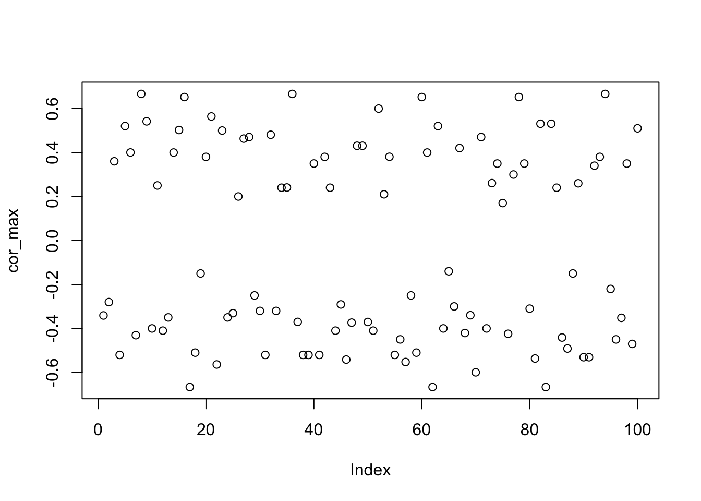
plot(elbo_list, abs(cor_max))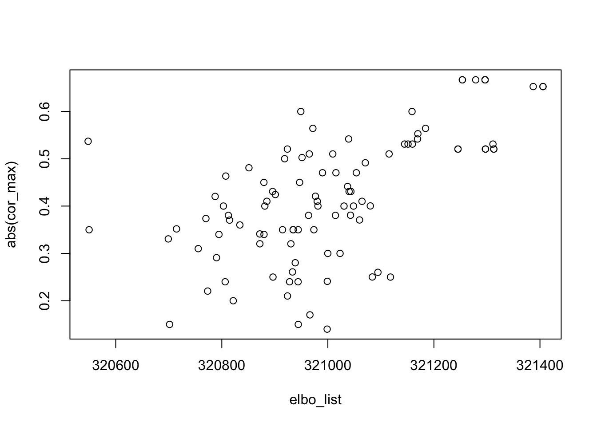
cor(elbo_list, abs(cor_max))[1] 0.6173323n.ones <- rep(0, 100)
for (i in 1:100) {
n.ones[i] <- (table(est_L[,i] > 0) / 100)[1]
}
n.ones [1] 0.46 0.52 0.51 0.52 0.48 0.50 0.47 0.36 0.46 0.50 0.50 0.49 0.50 0.50 0.45
[16] 0.63 0.64 0.49 0.50 0.48 0.44 0.44 0.50 0.50 0.47 0.50 0.44 0.52 0.50 0.52
[31] 0.48 0.53 0.48 0.51 0.46 0.64 0.48 0.48 0.48 0.50 0.48 0.52 0.51 0.49 0.46
[46] 0.46 0.43 0.47 0.47 0.53 0.51 0.41 0.51 0.47 0.48 0.50 0.45 0.50 0.51 0.37
[61] 0.50 0.64 0.48 0.50 0.49 0.50 0.48 0.47 0.49 0.41 0.48 0.50 0.54 0.50 0.48
[76] 0.57 0.50 0.37 0.50 0.51 0.58 0.47 0.64 0.47 0.51 0.54 0.46 0.50 0.49 0.47
[91] 0.47 0.49 0.52 0.64 0.53 0.50 0.45 0.50 0.48 0.49median(n.ones)[1] 0.495What if we drop the centering step? With 100 random initializations, 49 of them result in an estimate that is almost perfect recovery of one of the 5 true sources. Furthermore, these solutions have the highest ELBO.
X2 <- preprocess2(X, center = F)
obj <- c() # fastICA objective of the solutions, should be the same for all solution
elbo_list <- c() # final elbo of each solution
cor_max <- c() # maximum correlation between the estmate and a true source
mse <- c()
est_L <- matrix(0, nrow = nrow(X), ncol = 100) # all 100 solutions
for (i in 1:100) {
set.seed(i)
l <- matrix(rnorm(nrow(X2)), ncol = 1)
f <- t(solve(crossprod(l), crossprod(l, X2)))
flash_res_init_from_random_K1 <- flash_init(X2) |>
flash_factors_init(init = list(l, f),
ebnm_fn = c(ebnm_rademacher, ebnm_normal)) |>
flash_backfit(verbose = 0)
cor_tmp <- cor(L, flash_res_init_from_random_K1$L_pm)
cor_max <- c(cor_max, cor_tmp[which.max(abs(cor_tmp)), ])
obj <- c(obj, compute_objective_s(flash_res_init_from_random_K1$L_pm))
elbo_list <- c(elbo_list, flash_res_init_from_random_K1$elbo)
mse <- c(mse, mean((flash_res_init_from_random_K1$L_pm %*% t(flash_res_init_from_random_K1$F_pm) - L %*% t(FF))^2))
est_L[,i] <- flash_res_init_from_random_K1$L_pm
}
# harmonize the signs for better visualization
cors <- cor(est_L[, 1], est_L)
est_L[, cors < 0] <- -est_L[, cors < 0]
plot(cor_max)
| Version | Author | Date |
|---|---|---|
| 94bb2cd | junmingguan | 2026-03-08 |
plot(elbo_list, abs(cor_max))
| Version | Author | Date |
|---|---|---|
| 94bb2cd | junmingguan | 2026-03-08 |
cor(elbo_list, abs(cor_max))[1] 0.9723073n.ones <- rep(0, 100)
for (i in 1:100) {
n.ones[i] <- (table(est_L[,i] > 0) / 100)[1]
}
sum(abs(cor_max)>0.99)[1] 49n.ones [1] 0.20 0.80 0.55 0.80 0.29 0.20 0.80 0.20 0.71 0.59 0.30 0.70 0.46 0.80 0.80
[16] 0.80 0.80 0.77 0.40 0.57 0.80 0.20 0.39 0.20 0.80 0.19 0.39 0.80 0.20 0.20
[31] 0.74 0.20 0.62 0.34 0.20 0.45 0.68 0.30 0.80 0.80 0.20 0.42 0.44 0.75 0.29
[46] 0.20 0.61 0.47 0.80 0.47 0.20 0.80 0.47 0.42 0.20 0.44 0.20 0.40 0.80 0.80
[61] 0.80 0.80 0.20 0.50 0.56 0.41 0.20 0.52 0.80 0.39 0.80 0.80 0.80 0.20 0.44
[76] 0.56 0.24 0.20 0.20 0.51 0.20 0.65 0.13 0.47 0.09 0.61 0.20 0.54 0.39 0.49
[91] 0.44 0.20 0.20 0.48 0.80 0.20 0.43 0.80 0.62 0.20#
image(t(est_L[, order(elbo_list, decreasing = T)]))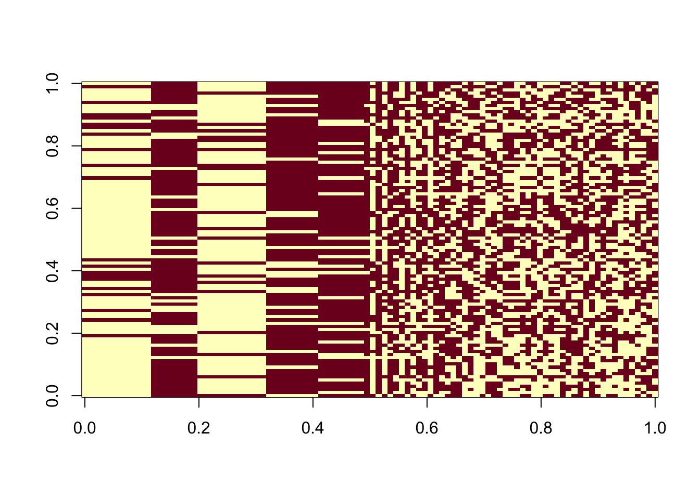
Further exploration
Here we present some more miscellaneous simulation results
Highly unbalanced groups example
fastICA seems do well when \(p\) is blow the lower thresold \(0.21\) or above the upper threshold \(0.79\) and \(K\) is high (\(\ge 3\)).
For 4 unbalanced groups with 10 (out of 100) members in each, fastICA can recover one true sources if initialized from the truth, and can do so most of the time if initialized randomly. flashierRad does not do well in this case, probably because \(K\) is high.
Since fastICA seems to do better in this scenario, it makes sense to initialize flashierRad from fastICA solution, but it does not appear to help. Specifically, I initialized flashierRad from 100 randomly initialized fastICA solutions, and all of them reached to the same solution, even if the fastICA solutions are the good one.
sim_data <- simulate_unbalanaced_rad_groups(K=4, percent_one = 0.1)
X <- sim_data$X
L <- sim_data$L
FF <- sim_data$FFX1 <- preprocess(X)
# fastICA init from truth
init_w <- X1 %*% L[,1]
w <- fastica_r1update(init_w, X1)
max(abs(cor(L, t(X1) %*% w)))[1] 0.9985388# fastICA init from random
cor_max <- c()
for (i in 1:100) {
set.seed(i)
init_w <- rnorm(nrow(X1))
w <- fastica_r1update(init_w, X1)
cor_max <- c(cor_max, max(abs(cor(L, t(X1) %*% w))))
}
table(cor_max > 0.99)
FALSE TRUE
19 81 # flashierRad init from truth
l <- matrix(L[,1], ncol = 1)
f <- t(solve(crossprod(l), crossprod(l, X)))
flash_res_init_from_true_L <- flash_init(X) |>
flash_factors_init(init = list(l, f),
ebnm_fn = c(ebnm_rademacher, ebnm_normal)) |>
flash_backfit(verbose = 0)
cor(L, flash_res_init_from_true_L$L_pm) [,1]
[1,] -0.06804138
[2,] 0.61237244
[3,] 0.27216553
[4,] 0.27216553cor(l, flash_res_init_from_true_L$L_pm) [,1]
[1,] -0.06804138# flashierRad init from random
cor_max <- c()
for (i in 1:100) {
set.seed(i)
l <- matrix(rnorm(nrow(X)), ncol = 1)
f <- t(solve(crossprod(l), crossprod(l, X)))
flash_res_init_from_random_K1 <- flash_init(X) |>
flash_factors_init(init = list(l, f),
ebnm_fn = c(ebnm_symm_rademacher, ebnm_normal)) |>
flash_backfit(verbose = 0)
cor_max <- c(cor_max, max(abs(cor(L, flash_res_init_from_random_K1$L_pm))))
}
table(cor_max > 0.8)
FALSE
100 # flashierRad init from fastICA solution
cor_max_fastica <- c()
cor_max_flashierRad <- c()
est_L <- matrix(0, nrow = n, ncol = 100)
for (i in 1:100) {
set.seed(i)
init_w <- rnorm(nrow(X1))
w <- fastica_r1update(init_w, X1)
cor_max_fastica <- c(cor_max_fastica, max(abs(cor(L, t(X1) %*% w))))
l <- t(X1) %*% w
f <- t(solve(crossprod(l), crossprod(l, X)))
flash_res_init_from_fastica <- flash_init(X) |>
flash_factors_init(init = list(l, f),
ebnm_fn = c(ebnm_rademacher, ebnm_normal)) |>
flash_backfit(verbose = 0)
est_L[,i] <- flash_res_init_from_fastica$L_pm
cor_max_flashierRad <- c(cor_max_flashierRad, max(abs(cor(L, flash_res_init_from_fastica$L_pm))))
}
table(cor_max_flashierRad)cor_max_flashierRad
0.612372435695795
100 image(t(est_L))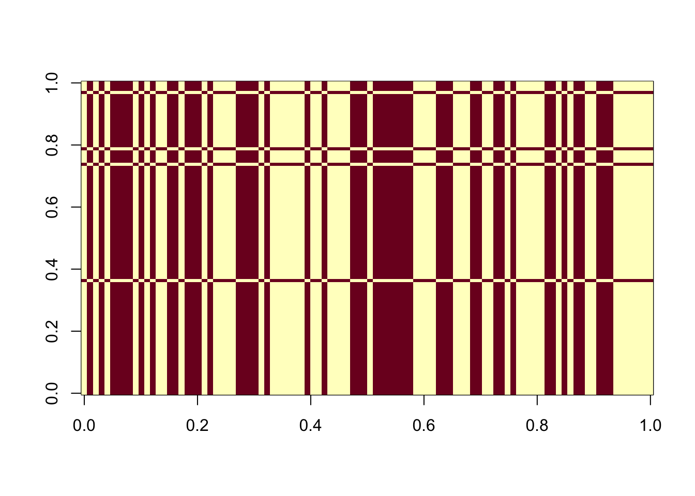
sessionInfo()R version 4.3.1 (2023-06-16)
Platform: aarch64-apple-darwin20 (64-bit)
Running under: macOS 26.2
Matrix products: default
BLAS: /Library/Frameworks/R.framework/Versions/4.3-arm64/Resources/lib/libRblas.0.dylib
LAPACK: /Library/Frameworks/R.framework/Versions/4.3-arm64/Resources/lib/libRlapack.dylib; LAPACK version 3.11.0
locale:
[1] en_US.UTF-8/en_US.UTF-8/en_US.UTF-8/C/en_US.UTF-8/en_US.UTF-8
time zone: America/Los_Angeles
tzcode source: internal
attached base packages:
[1] stats graphics grDevices utils datasets methods base
other attached packages:
[1] fastTopics_0.6-192 fastICA_1.2-7 Matrix_1.6-4 flashier_1.0.54
[5] ebnm_1.1-34 workflowr_1.7.1
loaded via a namespace (and not attached):
[1] tidyselect_1.2.1 rootSolve_1.8.2.4 viridisLite_0.4.2
[4] dplyr_1.1.4 fastmap_1.2.0 lazyeval_0.2.2
[7] promises_1.3.0 digest_0.6.37 lifecycle_1.0.4
[10] processx_3.8.2 invgamma_1.1 magrittr_2.0.3
[13] compiler_4.3.1 rlang_1.1.4 sass_0.4.9
[16] progress_1.2.3 tools_4.3.1 utf8_1.2.4
[19] yaml_2.3.10 data.table_1.16.2 knitr_1.48
[22] prettyunits_1.2.0 htmlwidgets_1.6.4 scatterplot3d_0.3-44
[25] RColorBrewer_1.1-3 Rtsne_0.17 purrr_1.0.2
[28] grid_4.3.1 fansi_1.0.6 git2r_0.35.0
[31] colorspace_2.1-1 ggplot2_3.5.1 scales_1.3.0
[34] gtools_3.9.5 cli_3.6.3 rmarkdown_2.28
[37] crayon_1.5.3 generics_0.1.3 RcppParallel_5.1.9
[40] rstudioapi_0.15.0 httr_1.4.7 pbapply_1.7-2
[43] cachem_1.1.0 stringr_1.5.1 splines_4.3.1
[46] parallel_4.3.1 softImpute_1.4-1 matrixStats_1.3.0
[49] vctrs_0.6.5 jsonlite_1.8.9 callr_3.7.3
[52] hms_1.1.3 mixsqp_0.3-54 ggrepel_0.9.6
[55] irlba_2.3.5.1 horseshoe_0.2.0 trust_0.1-8
[58] plotly_4.10.4 jquerylib_0.1.4 tidyr_1.3.1
[61] glue_1.8.0 ps_1.7.5 uwot_0.1.16
[64] cowplot_1.1.3 stringi_1.8.4 Polychrome_1.5.1
[67] gtable_0.3.6 later_1.3.2 quadprog_1.5-8
[70] munsell_0.5.1 tibble_3.2.1 pillar_1.9.0
[73] htmltools_0.5.8.1 truncnorm_1.0-9 R6_2.5.1
[76] rprojroot_2.0.3 evaluate_1.0.1 lattice_0.21-8
[79] highr_0.11 RhpcBLASctl_0.23-42 SQUAREM_2021.1
[82] ashr_2.2-63 httpuv_1.6.14 bslib_0.8.0
[85] Rcpp_1.0.13 deconvolveR_1.2-1 whisker_0.4.1
[88] xfun_0.48 fs_1.6.4 getPass_0.2-4
[91] pkgconfig_2.0.3